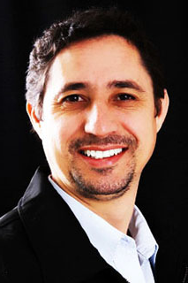

Wander Von Muller
Mais do que qualquer língua falada e ou escrita, a fotografia é uma linguagem universal. Se você ver à foto de capa de uma revista, em um olhar saberá , em parte, do que se trata a matéria e os assuntos tratados na revista independente da língua em que está escrita. Fotografia é um processo que nos permite criar e recriar imagens do mundo, imprimindo a elas uma intenção muitas vezes inconsciente e que chamamos de visão, a intenção e visão de um fotografo quando usada com espontaneidade esta diretamente relacionada à sua vivencia, experiências e conhecimentos adquiridos ao longo da vida, por esse motivo a fotografia feita por um fotografo é difere da mesma fotografia feita por outro.
{kind=link}
A fotografia é um registro e um documento incontestável de que algo realmente aconteceu e nesta busca por cenas o fotografo passa a ser um expert no domínio de sua ferramenta e amiga inseparável a câmera fotográfica.
Procuro contar história com as minhas fotografias e as faço com muita paixão. Capturo o inusitado em cada cena que se segue. Busco a riqueza nos detalhes, com arte e emoção.
A fotografia é arte, é a emoção de eternizar para sempre um momento espontâneo. É mais do que palavras, é o dom da percepção.
Sou fotógrafo em Joinville a mais de uma década e com conhecimento e técnica unidos a equipamentos tecnológicos adequados e uma boa equipe, faço de cada serviço executado uma excelência no resultado final para grande satisfação daquele que é a razão de minha existência como profissional: O Cliente.
Wander Von Muller
Dias e horas de atendimento no local físico (Studio).
Atendendo de segunda a sexta feira, com hora agendada período da manhã das 08h00min ao 12h00min.
Período da tarde 14h00min as 18h00min. Demais horários e dias consultar disponibilidade de agenda por e-mail.
Agendamento orçamento e ou demais informações.
Contatar diretamente comigo von.muller@hotmail.com.
Tempo de resposta até 24horas. Do recebimento.